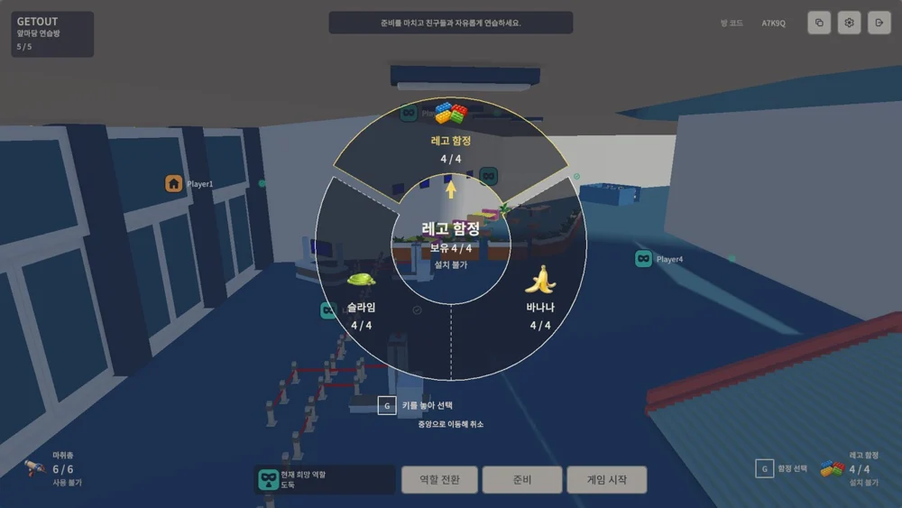

작업 노트
팀 테스트에서 게임이 시작된 뒤 무엇을 해야 할지 모르겠다는 의견이 나왔습니다. 두 역할 모두 화면에 ‘역할 목표를 수행하세요’가 떴습니다. 집주인이 지킬 대상도, 도둑이 노릴 대상도 알 수 없는 문장이었습니다.
한 문구를 네 상황으로
목표를 역할과 경기 단계로 나눴습니다. 준비 단계에는 곧 할 행동을, 본게임에는 승패를 가르는 대상을 문장에 넣었습니다. 제안한 문구가 병합된 것을 확인했고, 변경 후 이해도는 측정하지 않았습니다.
선택 휠에서 시험한 것
9월 15일 검증 빌드에서 실제 G키와 마우스로 함정 6종을 골라 각 요청이 한 번 전달되고 Host 승인 뒤 선택값이 일치하는지 확인했습니다.

세 칸의 경계를 다시 맞추다
선택을 유지하고 취소하는 동작을 시험하다가 세 칸이 같은 넓이로 보이지 않는 걸 발견했습니다. 각 영역을 120도로 나누도록 요청하고 9월 12일 실제 테스트 프로젝트에서 반영된 화면을 확인했습니다.


취소도 플레이의 일부
Esc로 닫을 때 추가 요청이 발생하는지, 다시 캐릭터를 조작할 수 있게 커서 잠금이 돌아오는지도 살폈습니다. 다섯 프로세스를 실행하고 그중 두 화면을 렌더링해 선택과 취소를 확인했습니다. 선택 속도와 오조작률은 측정 범위에서 제외했습니다.